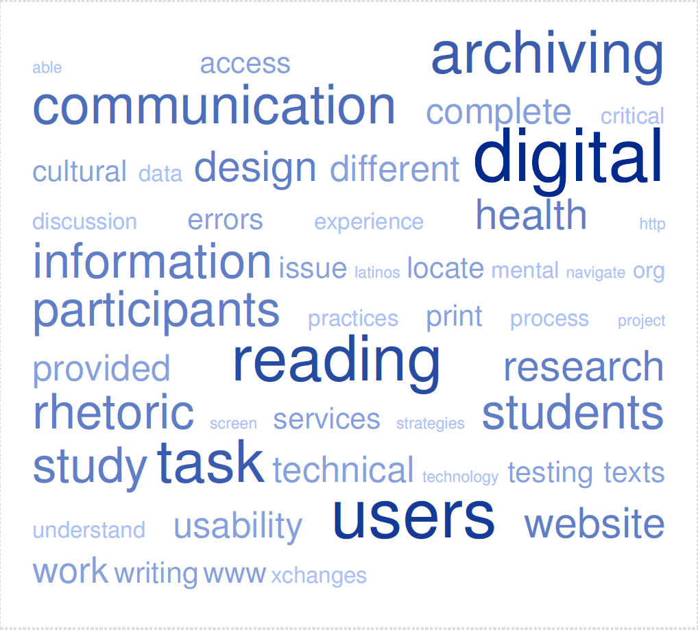
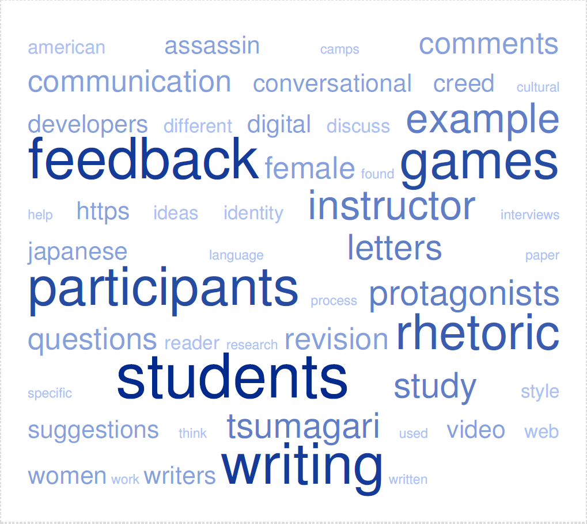
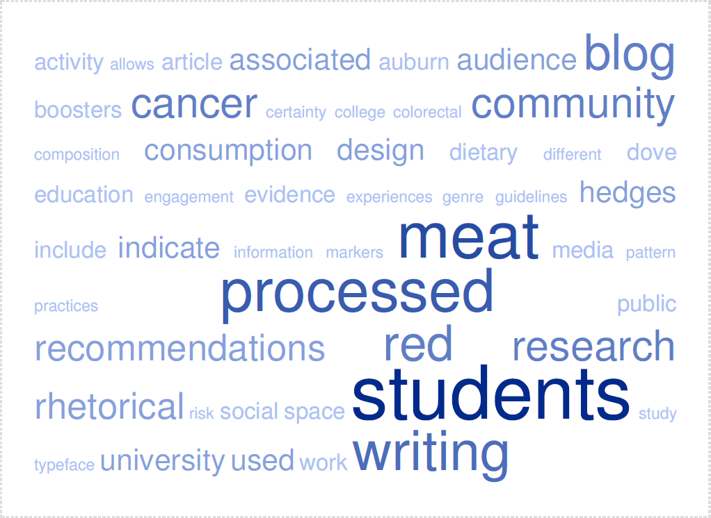
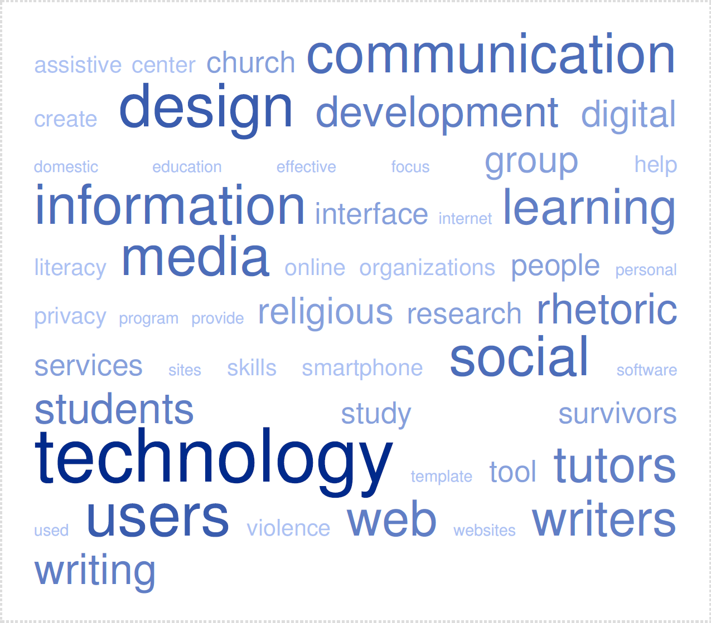
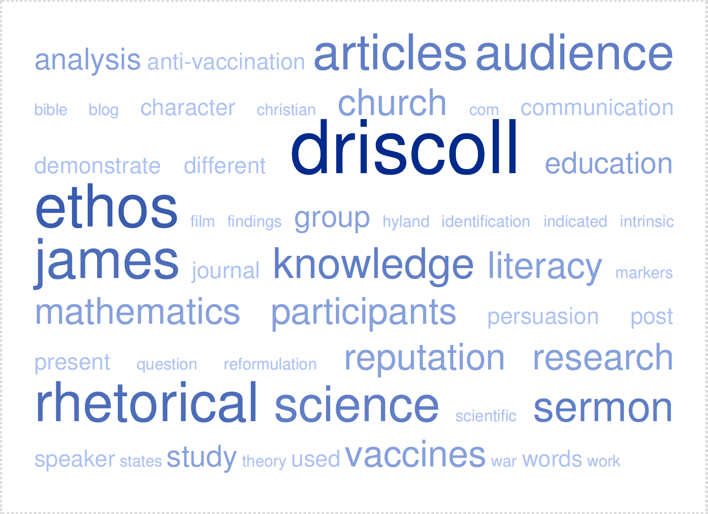

Distant Reading (DR) can be understood as one method of studying how literary texts evolve over a given period of time. DR allows a researcher to sift through quantitative and qualitative data retroactively, to better understand literary turns that may or may not influence future text topics or writing practices. However, to refine methodological uses of DR, the data collected needs to be scrutinized and categorized for comprehension. In other words, mass amounts of data are not useful without narrowing the scope of interest.
This DR project will collect data from five most recent issues of XChanges, a popular rhetoric, writing, and technical communication journal, to compare the most frequently used word choices over a two-and-a-half-year period. The journal publishes issues twice annually, which may reflect a reoccuring or evolving theme within a given year. Five issues were chosen as a pilot study for ease of collection. Each piece of writing in XChanges will be used: author biography, articles, interviews, and the bibliographies. All writing collected data will be processed by the free online software TagCrowd to provide a visual representation of XChanges's annual themes.
The data collected represents five issues of XChanges over a two-and-a-half year period.

Figure 1. The 50 most frequently used words generated by TagCrowd's free online software. The five most frequently used words in XChange issue 14.1 are (in descending order): Digital, Users, Reading, Archiving, and Task.

Figure 2. The 50 most frequently used words generated by TagCrowd's free online software. The five most frequently used words in XChanges issue 13.2 are (in descending order): Students, Feedback, Writing, Games, and Participants.

Figure 3. The 50 most frequently used words generated by TagCrowd's free online software. The five most frequently used words in XChanges issue 12.2/13.2 are (in descending order): Students, Meat, Processed, Red, and Writing

Figure 4. The 50 most frequently used words generated by TagCrowd's free online software. The five most frequently used words in XChanges issue 12.1 are (in descending order): Technology, Users, Design, Social, and Information.

Figure 5. The 50 most frequently used words generated by TagCrowd's free online software. The five most frequently used words in XChanges issue 11.2 are (in descending order): Driscoll, Ethos, Rhetorical, James, Audience.